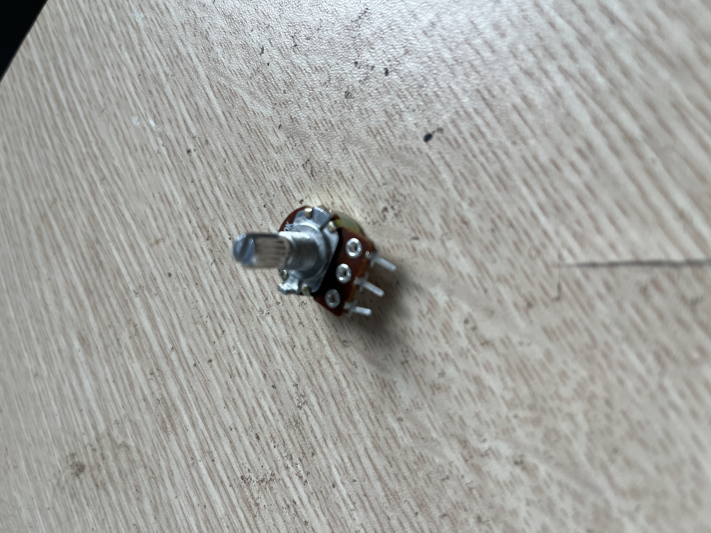

P7 Servo + biến trở
Xoay biến trở 10K → ESP32 đọc ADC ở D34 → phát xung servo 50Hz ở D18. Layout hiện tại dùng ESP32 rời breadboard và jumper đực-cái.
An toàn
Servo SG90 dùng 5V và dòng cao hơn LED. Không cấp servo từ chân 3V3. Nếu cấp servo từ VIN làm USB/hub đơ, rút dây VIN→a31 và chuyển sang test biến trở trước; servo cần nguồn 5V ngoài đủ dòng. Biến trở cấp 3V3 vì D34 chỉ đọc tối đa 3.3V. Servo và ESP32 phải có GND chung.
Pha A: test an toàn
Giữ dây VIN→a31 đã rút. Pha này chỉ kiểm tra biến trở, ADC, mapping góc và xung D18; servo chưa quay vì dây đỏ chưa có 5V.
| Node | Trạng thái |
|---|---|
3V3 → a20/d20 | Giữ cắm |
D34 → a22/d22 | Giữ cắm |
GND → a24/d24 | Giữ cắm |
D18 → a30/d30 → servo vàng | Giữ cắm |
GND → a32/d32 → servo nâu | Giữ cắm |
VIN → a31/d31 → servo đỏ | Rút ra |
Pha B: servo quay thật
Chỉ cấp dây đỏ servo bằng nguồn 5V riêng đủ dòng. Nối GND nguồn đó chung với GND ESP32 tại a32/d32. Không dùng module chưa rõ loại chỉ có VCC / OUT / GND cho tới khi đo chắc OUT là 5V và biết chịu đủ dòng.
Ảnh linh kiện




Nối dây
| Linh kiện | Tọa độ | Nối tới | Ghi chú |
|---|---|---|---|
| Biến trở chân 1 | d20 | ESP32 3V3: đỏ cái→3V3, đực→a20 | Cùng hàng 20 nửa trái |
| Biến trở chân giữa | d22 | ESP32 D34: xanh cái→D34, đực→a22 | ADC input-only |
| Biến trở chân 3 | d24 | ESP32 GND: cam cái→GND, đực→a24 | Xoay ngược thì đổi chân 1/3 |
| Servo signal | d30 | ESP32 D18: nâu cái→D18, đực→a30 | Qua jumper vàng đực-đực tới dây vàng servo |
| Servo +5V | d31 | ESP32 VIN: vàng cái→VIN, đực→a31 | Chỉ thử nhẹ; nếu USB đơ thì rút dây này |
| Servo GND | d32 | ESP32 GND: xanh ngọc cái→GND, đực→a32 | Qua jumper nâu đực-đực tới dây nâu servo |
Biến trở:
ESP32 3V3 ──đỏ── a20 ═ d20 [leg 1]
d22 [wiper] ═ a22 ──xanh── ESP32 D34
ESP32 GND ──cam── a24 ═ d24 [leg 3]
Servo SG90:
ESP32 D18 ──nâu──── a30 ═ d30 ──vàng đực-đực── servo vàng signal
ESP32 VIN ──vàng─── a31 ═ d31 ──đỏ đực-đực──── servo đỏ +5V
ESP32 GND ──xanh ngọc a32 ═ d32 ──nâu đực-đực── servo nâu GNDBoard map
Chi tiết: boards/p07.md. MB102 mẫu: sơ đồ chung.
Biến trở: d20 · d22 · d24. Servo landing: signal d30 · 5V d31 · GND d32.
Jumper: ESP32 3V3→a20 · GND→a24 · D34→a22 · D18→a30 · VIN→a31 · GND→a32.
Các bước làm
- Gỡ module LDR P6 nếu còn; cắm lại biến trở @
d20/d22/d24. - Cắm servo vào 3 điểm landing:
d30tới dây vàng signal,d31tới dây đỏ +5V,d32tới dây nâu GND. main.cppđang chọnp07_setup/p07_loop.- Nếu từng làm USB/hub đơ: rút dây
VIN→a31trước, chỉ giữ biến trở + signal/GND để upload. - Build/upload:
pio run -t upload; monitor:pio device monitor. - Xoay núm chậm; Serial in
pot ADC=... angle=... pulse=...us.
Atomic trace
analogRead(34)đọc điện áp wiper từ biến trở quaa22 → ESP32 D34.map(adc, 0, 4095, 0, 180)đổi giá trị ADC thành góc.ledcWrite(...)tạo xung 50Hz trên ESP32 D18.- Signal đi qua jumper nâu tới
a30 → d30, rồi qua jumper vàng đực-đực vào dây vàng servo. - Servo lấy dòng motor từ VIN tới
a31/d31và trả về GND quad32/a32.
Hoàn thành khi
- Servo quay theo biến trở ổn định, không reset ESP32.
- Bạn phân biệt được ADC input 0–3.3V và servo PWM 50Hz theo độ rộng xung.